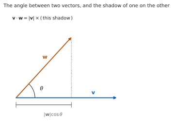
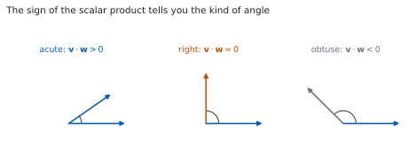

HL 3.13 — The scalar product and the angle between two vectors（内積となす角）
- 内積（scalar product）を成分から出せる。
- \(\mathbf{v}\cdot\mathbf{w} = \lvert\mathbf{v}\rvert\lvert\mathbf{w}\rvert\cos\theta\) を使える。
- \(2\) つのベクトルのなす角を出せる（公式集の 3.13）。
- \(\mathbf{v}\cdot\mathbf{w} = 0\) と垂直が同値であることを使える。
- 平行なベクトルでは \(\lvert\mathbf{v}\cdot\mathbf{w}\rvert = \lvert\mathbf{v}\rvert\lvert\mathbf{w}\rvert\) であることを知っている。
- 内積の性質（交換・分配・スカラー倍・\(\mathbf{v}\cdot\mathbf{v}\)）を使える。
- 内積を使って、図形の性質を証明できる。
The idea
1. The definition of the scalar product（内積の定義）
シラバスは、\(3\) 行です。
The definition of the scalar product of two vectors.
The angle between two vectors.
Perpendicular vectors; parallel vectors.
内積は、\(2\) つのベクトルから \(1\) つの数（スカラー）をつくる計算です。結果はベクトルではありません。
公式集の 3.13 の欄に、次の形で印刷されています。
Scalar product
\(v \cdot w = v_{1}w_{1} + v_{2}w_{2} + v_{3}w_{3}\), where \(v = \begin{pmatrix} v_{1} \\ v_{2} \\ v_{3} \end{pmatrix}\), \(w = \begin{pmatrix} w_{1} \\ w_{2} \\ w_{3} \end{pmatrix}\)
\[ \mathbf{v}\cdot\mathbf{w} = v_{1}w_{1}+v_{2}w_{2}+v_{3}w_{3} \tag{1}\]
成分どうしをかけて、全部足すだけです。
\(\mathbf{v}\cdot\mathbf{w}\) は数です。ベクトルではありません。
答えを \(\begin{pmatrix} \ \\ \ \\ \ \end{pmatrix}\) の形で書いたら、まちがいです。\(-8\) のような数を書いてください。
2. The two formulas（\(2\) つの式）

公式集には、もう \(1\) つの式もあります。
\(v \cdot w = \lvert v \rvert \lvert w \rvert \cos\theta\), where \(\theta\) is the angle between \(v\) and \(w\)
\[ \mathbf{v}\cdot\mathbf{w} = \lvert\mathbf{v}\rvert\lvert\mathbf{w}\rvert\cos\theta \tag{2}\]
図 1 のとおり、\(\lvert\mathbf{w}\rvert\cos\theta\) は \(\mathbf{w}\) を \(\mathbf{v}\) の向きに落とした影の長さです。内積は、その影と \(\lvert\mathbf{v}\rvert\) の積です。
この \(2\) つの式があることが、内積の強みです。 成分から数を出し、その数から角を出せます。
3. The angle between two vectors（なす角）
式 1 と 式 2 を等しいと置けば、\(\cos\theta\) が出ます。公式集には、その形も印刷されています。
Angle between two vectors
\(\cos\theta = \dfrac{v_{1}w_{1}+v_{2}w_{2}+v_{3}w_{3}}{\lvert v \rvert \lvert w \rvert}\)
\[ \cos\theta = \frac{\mathbf{v}\cdot\mathbf{w}}{\lvert\mathbf{v}\rvert\lvert\mathbf{w}\rvert} \tag{3}\]
手順は \(3\) 手です。
- 内積を成分から出す。
- \(2\) つの大きさを出す。
- 式 3 に入れて、\(\theta = \arccos(\cdots)\) とする。
\(\theta\) は \(0\) から \(\pi\) までの角です。\(\arccos\) の値域と同じです（HL 3.9）。
図 2 のとおり、内積の符号が角の種類を教えてくれます。

| \(\mathbf{v}\cdot\mathbf{w}\) | \(\cos\theta\) | \(\theta\) |
|---|---|---|
| 正 | 正 | 鋭角（\(0 \leq \theta < \dfrac{\pi}{2}\)） |
| \(0\) | \(0\) | 直角 |
| 負 | 負 | 鈍角（\(\dfrac{\pi}{2} < \theta \leq \pi\)） |
4. Perpendicular vectors（垂直なベクトル）
Guidance は、はっきり書いています。
For non-zero vectors \(v \cdot w = 0\) is equivalent to the vectors being perpendicular
\[ \mathbf{v}\cdot\mathbf{w} = 0 \iff \mathbf{v} \perp \mathbf{w} \qquad (\mathbf{v} \neq \mathbf{0},\ \mathbf{w} \neq \mathbf{0}) \tag{4}\]
\(\cos\dfrac{\pi}{2} = 0\) だからです。式 2 の右辺が \(0\) になります。
垂直かどうかの判定は、内積 \(1\) 回で終わります。 角を出す必要はありません。
\(\mathbf{0}\) を外してあるのは、\(\mathbf{0}\) に向きがないからです。\(\mathbf{0}\cdot\mathbf{w} = 0\) ですが、「垂直」とは言いません。
5. Parallel vectors and the scalar product（平行なベクトルと内積）
Guidance の続きです。
for parallel vectors \(\lvert v \cdot w \rvert = \lvert v \rvert \lvert w \rvert\)
平行なら \(\theta = 0\) か \(\theta = \pi\) なので、\(\cos\theta = \pm 1\) です。ですから
\[ \lvert\mathbf{v}\cdot\mathbf{w}\rvert = \lvert\mathbf{v}\rvert\lvert\mathbf{w}\rvert \tag{5}\]
です。絶対値が付いているところに気をつけてください。向きが逆なら、内積そのものは負になります。
6. Properties of the scalar product（内積の性質）
Guidance は、\(4\) つの性質を挙げています。
Applications of the properties of the scalar product
\(v \cdot w = w \cdot v\);
\(u \cdot (v + w) = u \cdot v + u \cdot w\);
\((kv) \cdot w = k(v \cdot w)\);
\(v \cdot v = \lvert v \rvert^{2}\).
\(4\) つ目が、とくによく使います。
\[ \mathbf{v}\cdot\mathbf{v} = \lvert\mathbf{v}\rvert^{2} \tag{6}\]
\(\theta = 0\) なので \(\cos\theta = 1\) で、式 2 が \(\lvert\mathbf{v}\rvert^{2}\) になります。
分配できる（\(2\) つ目）ので、ふつうの式のように展開できます。
\[ (\mathbf{u}+\mathbf{w})\cdot(\mathbf{u}-\mathbf{w}) = \mathbf{u}\cdot\mathbf{u} - \mathbf{w}\cdot\mathbf{w} = \lvert\mathbf{u}\rvert^{2} - \lvert\mathbf{w}\rvert^{2} \tag{7}\]
\(2\) 乗の差の形になりました（演習 9）。
7. Using the scalar product in geometry（図形で使う）
図形の問題では、次の \(2\) つに使います。
- 角を出す（三角形の内角など）
- 垂直を示す（\(2\) つのベクトルの内積が \(0\)）
三角形 \(ABC\) の角 \(BAC\) を出すなら、\(A\) から出る \(2\) 本、つまり \(\overrightarrow{AB}\) と \(\overrightarrow{AC}\) の内積を使います。
\[ \cos(\angle BAC) = \frac{\overrightarrow{AB}\cdot\overrightarrow{AC}} {\lvert\overrightarrow{AB}\rvert\lvert\overrightarrow{AC}\rvert} \tag{8}\]
向きをそろえるところが要です。\(\overrightarrow{BA}\) と \(\overrightarrow{AC}\) を使うと、\(\pi\) から引いた角が出てしまいます。
TI-Nspire CX II には dotP( があります。dotP([1,2,3],[4,5,6]) のように使います。
なす角は dotP と norm を組み合わせて、\(\arccos\) に入れます。RAD になっているかを見てください。
答案には、式を書いてください。 式 3 の形を書いてから値を入れます。dotP(...) と書いても点になりません。
Paper 1 では使えません。 このページの例題と演習は、すべて手で解けるようにしてあります。
Why it works
なぜ \(2\) つの式が同じものなのか
\(\mathbf{v}\)、\(\mathbf{w}\) と \(\mathbf{v}-\mathbf{w}\) で三角形をつくります。余弦定理（SL 3.2）から
\[ \lvert\mathbf{v}-\mathbf{w}\rvert^{2} = \lvert\mathbf{v}\rvert^{2} + \lvert\mathbf{w}\rvert^{2} - 2\lvert\mathbf{v}\rvert\lvert\mathbf{w}\rvert\cos\theta \]
です。左辺を成分で書くと
\[ (v_{1}-w_{1})^{2}+(v_{2}-w_{2})^{2}+(v_{3}-w_{3})^{2} \]
で、展開すると
\[ = \lvert\mathbf{v}\rvert^{2} + \lvert\mathbf{w}\rvert^{2} - 2\left(v_{1}w_{1}+v_{2}w_{2}+v_{3}w_{3}\right) \]
です。\(2\) つをくらべると、最後のかっこの中が \(\lvert\mathbf{v}\rvert\lvert\mathbf{w}\rvert\cos\theta\) に等しいと分かります。
なぜ、内積が \(0\) で垂直なのか
\(\mathbf{v} \neq \mathbf{0}\)、\(\mathbf{w} \neq \mathbf{0}\) とすると \(\lvert\mathbf{v}\rvert > 0\)、\(\lvert\mathbf{w}\rvert > 0\) です。ですから 式 2 で
\[ \mathbf{v}\cdot\mathbf{w} = 0 \iff \cos\theta = 0 \]
です。\(0 \leq \theta \leq \pi\) で \(\cos\theta = 0\) になるのは \(\theta = \dfrac{\pi}{2}\) だけなので、垂直と同値です。
片方が \(\mathbf{0}\) だと、\(\theta\) が決まりません。 だから条件に \(\mathbf{v} \neq \mathbf{0}\) が要ります。
\(\mathbf{v}\cdot\mathbf{v} = \lvert\mathbf{v}\rvert^{2}\) の \(2\)通りの見方
成分で。 式 1 で \(\mathbf{w} = \mathbf{v}\) とすると
\[ v_{1}^{2}+v_{2}^{2}+v_{3}^{2} = \lvert\mathbf{v}\rvert^{2} \]
です（HL 3.12）。
角で。 \(\mathbf{v}\) と \(\mathbf{v}\) のなす角は \(0\) なので \(\cos 0 = 1\)、式 2 は \(\lvert\mathbf{v}\rvert\lvert\mathbf{v}\rvert\) です。
どちらでも同じです。この式のおかげで、\(\lvert\ \rvert^{2}\) を内積に、内積を \(\lvert\ \rvert^{2}\) に置きかえられます。図形の証明で何度も使います。
内積は展開できます
\(u \cdot (v+w) = u\cdot v + u\cdot w\) は、成分で書けばすぐに見えます。
\[ u_{1}(v_{1}+w_{1}) + u_{2}(v_{2}+w_{2}) + u_{3}(v_{3}+w_{3}) \]
を並べかえるだけだからです。
交換法則 \(\mathbf{v}\cdot\mathbf{w} = \mathbf{w}\cdot\mathbf{v}\) も、\(v_{i}w_{i} = w_{i}v_{i}\) から出ます。
ですから、\((\mathbf{a}+\mathbf{b})\cdot(\mathbf{a}-\mathbf{b})\) のような式は、ふつうの展開と同じように扱えます。 ただし\(\mathbf{a}\cdot\mathbf{b}\) は数なので、それ以上「割る」ことはできません。ベクトルの割り算はありません。
Worked examples
問題文は英語です。意味が理解できなかったら、問題文の下の「日本語訳」を開いてください。解説は日本語です。
例題も演習も、すべて電卓なしで解けます。 Paper 1 のつもりで解いてください。
例題 1 Let \(\mathbf{a} = \begin{pmatrix} 2 \\ -1 \\ 3 \end{pmatrix}\) and \(\mathbf{b} = \begin{pmatrix} 1 \\ 4 \\ -2 \end{pmatrix}\).
(a) Find \(\mathbf{a}\cdot\mathbf{b}\).
(b) State whether the angle between \(\mathbf{a}\) and \(\mathbf{b}\) is acute, right or obtuse.
日本語訳
\(\mathbf{a} = \begin{pmatrix} 2 \\ -1 \\ 3 \end{pmatrix}\)、\(\mathbf{b} = \begin{pmatrix} 1 \\ 4 \\ -2 \end{pmatrix}\) とします。
(a) \(\mathbf{a}\cdot\mathbf{b}\) を求めなさい。
(b) \(\mathbf{a}\) と \(\mathbf{b}\) のなす角が、鋭角・直角・鈍角のどれかを書きなさい。
(a) 式 1 のとおり、成分どうしをかけて足します。
\[ \mathbf{a}\cdot\mathbf{b} = (2)(1)+(-1)(4)+(3)(-2) = 2-4-6 = -8 \]
(b) 内積が負なので、\(\cos\theta < 0\) です。\(0 \leq \theta \leq \pi\) で \(\cos\) が負になるのは \(\dfrac{\pi}{2}\) より大きい角なので、鈍角です（第 3 節）。
検算。 順番を入れかえて計算します。 \(\mathbf{b}\cdot\mathbf{a} = (1)(2)+(4)(-1)+(-2)(3) = -8\) ✓ 交換法則どおりです。
検算（符号だけ）。 \(3\) つの積は \(2\)、\(-4\)、\(-6\) です。負が大きいので、和は負 ✓ 鈍角と合っています。
(a) \(\mathbf{a}\cdot\mathbf{b} = (2)(1)+(-1)(4)+(3)(-2) = -8\)
(b) The scalar product is negative, so \(\cos\theta < 0\) and the angle is obtuse.
例題 2 Find the angle between \(\mathbf{u} = \mathbf{i}+\mathbf{j}\) and \(\mathbf{w} = \mathbf{i}+\mathbf{k}\).
日本語訳
\(\mathbf{u} = \mathbf{i}+\mathbf{j}\) と \(\mathbf{w} = \mathbf{i}+\mathbf{k}\) のなす角を求めなさい。
成分に直します。 \(\mathbf{u} = \begin{pmatrix} 1 \\ 1 \\ 0 \end{pmatrix}\)、\(\mathbf{w} = \begin{pmatrix} 1 \\ 0 \\ 1 \end{pmatrix}\) です。
内積。
\[ \mathbf{u}\cdot\mathbf{w} = (1)(1)+(1)(0)+(0)(1) = 1 \]
大きさ。
\[ \lvert\mathbf{u}\rvert = \sqrt{1+1+0} = \sqrt{2}, \qquad \lvert\mathbf{w}\rvert = \sqrt{1+0+1} = \sqrt{2} \]
式 3 に入れます。
\[ \cos\theta = \frac{1}{\sqrt{2}\cdot\sqrt{2}} = \frac{1}{2} \]
\[ \theta = \frac{\pi}{3} \]
検算。 \(\cos\theta\) の大きさを見ます。 \(\dfrac{1}{2}\) は \(-1\) と \(1\) のあいだです ✓ \(1\) より大きくなったら、どこかがまちがっています。
検算（符号）。 内積が正なので、鋭角のはずです。\(\dfrac{\pi}{3} < \dfrac{\pi}{2}\) ✓
\[\mathbf{u}\cdot\mathbf{w} = 1, \qquad \lvert\mathbf{u}\rvert = \sqrt{2}, \qquad \lvert\mathbf{w}\rvert = \sqrt{2}\]
\[\cos\theta = \frac{\mathbf{u}\cdot\mathbf{w}}{\lvert\mathbf{u}\rvert\lvert\mathbf{w}\rvert} = \frac{1}{2}, \qquad \theta = \frac{\pi}{3}\]
例題 3 Find the value of \(k\) for which \(\begin{pmatrix} 2 \\ k \\ -3 \end{pmatrix}\) and \(\begin{pmatrix} 4 \\ -1 \\ 2 \end{pmatrix}\) are perpendicular.
日本語訳
\(\begin{pmatrix} 2 \\ k \\ -3 \end{pmatrix}\) と \(\begin{pmatrix} 4 \\ -1 \\ 2 \end{pmatrix}\) が垂直になる \(k\) の値を求めなさい。
垂直なので、内積が \(0\) です（式 4）。
\[ (2)(4)+(k)(-1)+(-3)(2) = 0 \]
\[ 8 - k - 6 = 0 \ \Rightarrow \ 2 - k = 0 \ \Rightarrow \ k = 2 \]
検算。 \(k = 2\) を入れ直します。
\[ (2)(4)+(2)(-1)+(-3)(2) = 8-2-6 = 0 \]
\(0\) になりました ✓
検算（角のほう）。 内積が \(0\) なら \(\cos\theta = 0\) で、\(\theta = \dfrac{\pi}{2}\) です ✓ 大きさを計算する必要はありません。
Perpendicular means the scalar product is zero.
\[(2)(4)+(k)(-1)+(-3)(2) = 0\]
\[8-k-6 = 0, \qquad k = 2\]
例題 4 In triangle \(OAB\), \(\overrightarrow{OA} = \mathbf{a}\) and \(\overrightarrow{OB} = \mathbf{b}\), and \(M\) is the midpoint of \(AB\). Show that if \(\lvert\mathbf{a}\rvert = \lvert\mathbf{b}\rvert\) then \(OM\) is perpendicular to \(AB\).
日本語訳
三角形 \(OAB\) で \(\overrightarrow{OA} = \mathbf{a}\)、\(\overrightarrow{OB} = \mathbf{b}\) とし、\(M\) を \(AB\) の中点とします。\(\lvert\mathbf{a}\rvert = \lvert\mathbf{b}\rvert\) ならば \(OM\) が \(AB\) に垂直であることを示しなさい。
\(2\) 本のベクトルを、\(\mathbf{a}\) と \(\mathbf{b}\) で書きます（HL 3.12）。
\[ \overrightarrow{OM} = \frac{\mathbf{a}+\mathbf{b}}{2}, \qquad \overrightarrow{AB} = \mathbf{b}-\mathbf{a} \]
内積を計算します。 式 7 の形です。
\[ \overrightarrow{OM}\cdot\overrightarrow{AB} = \frac{1}{2}(\mathbf{a}+\mathbf{b})\cdot(\mathbf{b}-\mathbf{a}) = \frac{1}{2}\left(\lvert\mathbf{b}\rvert^{2}-\lvert\mathbf{a}\rvert^{2}\right) \]
\(\lvert\mathbf{a}\rvert = \lvert\mathbf{b}\rvert\) なので、これは \(0\) です。
試験ではこう書く
Since \(M\) is the midpoint of \(AB\), \(\overrightarrow{OM} = \dfrac{\mathbf{a}+\mathbf{b}}{2}\), and \(\overrightarrow{AB} = \mathbf{b}-\mathbf{a}\). Using the distributive property of the scalar product,
\[\overrightarrow{OM}\cdot\overrightarrow{AB} = \frac{1}{2}(\mathbf{a}+\mathbf{b})\cdot(\mathbf{b}-\mathbf{a}) = \frac{1}{2}\left(\mathbf{a}\cdot\mathbf{b}-\mathbf{a}\cdot\mathbf{a} +\mathbf{b}\cdot\mathbf{b}-\mathbf{b}\cdot\mathbf{a}\right)\]
The scalar product is commutative, so \(\mathbf{a}\cdot\mathbf{b}\) and \(\mathbf{b}\cdot\mathbf{a}\) cancel, and \(\mathbf{a}\cdot\mathbf{a} = \lvert\mathbf{a}\rvert^{2}\), \(\mathbf{b}\cdot\mathbf{b} = \lvert\mathbf{b}\rvert^{2}\). Hence
\[\overrightarrow{OM}\cdot\overrightarrow{AB} = \frac{1}{2}\left(\lvert\mathbf{b}\rvert^{2}-\lvert\mathbf{a}\rvert^{2}\right)\]
If \(\lvert\mathbf{a}\rvert = \lvert\mathbf{b}\rvert\) this is zero. Neither \(\overrightarrow{OM}\) nor \(\overrightarrow{AB}\) is the zero vector in a genuine triangle, so a zero scalar product means the two vectors are perpendicular: \(OM \perp AB\).
（\(\overrightarrow{OM}\) と \(\overrightarrow{AB}\) の内積を展開すると \(\dfrac{1}{2}\left(\lvert\mathbf{b}\rvert^{2}-\lvert\mathbf{a}\rvert^{2}\right)\) になり、\(2\) 辺が等しいとき \(0\) になる、という意味です。）
検算。 数で確かめます。 \(\mathbf{a} = \begin{pmatrix} 3 \\ 0 \end{pmatrix}\)、\(\mathbf{b} = \begin{pmatrix} 0 \\ 3 \end{pmatrix}\) なら \(\overrightarrow{OM} = \begin{pmatrix} 1.5 \\ 1.5 \end{pmatrix}\)、\(\overrightarrow{AB} = \begin{pmatrix} -3 \\ 3 \end{pmatrix}\) です。内積は \(-4.5+4.5 = 0\) ✓
検算（等しくないとき）。 \(\mathbf{a} = \begin{pmatrix} 4 \\ 0 \end{pmatrix}\)、\(\mathbf{b} = \begin{pmatrix} 0 \\ 3 \end{pmatrix}\) なら内積は \(\dfrac{1}{2}(9-16) = -3.5 \neq 0\) ✓ 条件が要ることが分かります。
\[\overrightarrow{OM} = \frac{\mathbf{a}+\mathbf{b}}{2}, \qquad \overrightarrow{AB} = \mathbf{b}-\mathbf{a}\]
\[\overrightarrow{OM}\cdot\overrightarrow{AB} = \frac{1}{2}(\mathbf{a}+\mathbf{b})\cdot(\mathbf{b}-\mathbf{a}) = \frac{1}{2}\left(\lvert\mathbf{b}\rvert^{2}-\lvert\mathbf{a}\rvert^{2}\right)\]
If \(\lvert\mathbf{a}\rvert = \lvert\mathbf{b}\rvert\) then this is \(0\), so \(OM\) is perpendicular to \(AB\).
Common errors
内積の答えは数です（第 1 節）。
成分を縦に並べて書いたら、まちがいです。ベクトルを返す積は、次の項目 AHL 3.16 の外積のほうです。
\(\cos\theta = \mathbf{v}\cdot\mathbf{w}\) ではありません。\(2\) つの大きさで割ります（式 3）。
割り忘れると、\(\cos\theta\) が \(1\) より大きくなることがあります。\(\lvert\cos\theta\rvert \leq 1\) を確かめてください。
\(\angle BAC\) を出すには、\(A\) から出る \(2\) 本、\(\overrightarrow{AB}\) と \(\overrightarrow{AC}\) を使います（第 7 節）。
\(\overrightarrow{BA}\) を使うと、\(\pi\) から引いた角が出ます。符号がちょうど逆になるので、気づきにくいまちがいです。
平行なとき、内積は \(\pm\lvert\mathbf{v}\rvert\lvert\mathbf{w}\rvert\) です（第 5 節）。
向きが逆なら負になります。絶対値を落とすと、符号を取りちがえます。
\(\mathbf{a}\cdot\mathbf{b} = \mathbf{a}\cdot\mathbf{c}\) から \(\mathbf{b} = \mathbf{c}\) とは言えません。
ベクトルの割り算はありません。 \(\mathbf{a}\cdot(\mathbf{b}-\mathbf{c}) = 0\) なので、\(\mathbf{a}\) と \(\mathbf{b}-\mathbf{c}\) が垂直だ、としか言えません。
Exercises
各問題に、折りたたみが \(3\) つ付いています。日本語訳、解答例（答案用紙に書くべきこと。英語です）、解説（なぜそうなるか。日本語です）。
まず自分で解いて、次に解答例と見くらべてください。解説は、合わなかったときだけ開けば十分です。
1 Let \(\mathbf{a} = \begin{pmatrix} 3 \\ -2 \\ 1 \end{pmatrix}\) and \(\mathbf{b} = \begin{pmatrix} -1 \\ 4 \\ 2 \end{pmatrix}\). Find \(\mathbf{a}\cdot\mathbf{b}\).
日本語訳
\(\mathbf{a} = \begin{pmatrix} 3 \\ -2 \\ 1 \end{pmatrix}\)、\(\mathbf{b} = \begin{pmatrix} -1 \\ 4 \\ 2 \end{pmatrix}\) とします。\(\mathbf{a}\cdot\mathbf{b}\) を求めなさい。
\[\mathbf{a}\cdot\mathbf{b} = (3)(-1)+(-2)(4)+(1)(2) = -3-8+2 = -9\]
成分どうしをかけて足すだけです（式 1）。符号をていねいに。
検算。 順番を入れかえても \(-9\) ✓
検算（符号）。 内積が負なので、なす角は鈍角です ✓ \(3\) つの積のうち \(2\) つが負です。
2 Find the angle between \(\mathbf{u} = \begin{pmatrix} 1 \\ 0 \\ 1 \end{pmatrix}\) and \(\mathbf{w} = \begin{pmatrix} 0 \\ 1 \\ 1 \end{pmatrix}\).
日本語訳
\(\mathbf{u} = \begin{pmatrix} 1 \\ 0 \\ 1 \end{pmatrix}\) と \(\mathbf{w} = \begin{pmatrix} 0 \\ 1 \\ 1 \end{pmatrix}\) のなす角を求めなさい。
\[\mathbf{u}\cdot\mathbf{w} = 0+0+1 = 1, \qquad \lvert\mathbf{u}\rvert = \sqrt{2}, \qquad \lvert\mathbf{w}\rvert = \sqrt{2}\]
\[\cos\theta = \frac{1}{2}, \qquad \theta = \frac{\pi}{3}\]
例題 2 と同じ手順です。\(\sqrt{2}\times\sqrt{2} = 2\) のところで、根号が消えます。
検算。 \(\cos\theta = \dfrac{1}{2}\) は \(-1\) と \(1\) のあいだ ✓
検算（符号）。 内積が正なので鋭角 ✓ \(\dfrac{\pi}{3} < \dfrac{\pi}{2}\) です。
3 Find the value of \(t\) for which \(\begin{pmatrix} 1 \\ t \\ 3 \end{pmatrix}\) and \(\begin{pmatrix} 2 \\ 4 \\ -2 \end{pmatrix}\) are perpendicular.
日本語訳
\(\begin{pmatrix} 1 \\ t \\ 3 \end{pmatrix}\) と \(\begin{pmatrix} 2 \\ 4 \\ -2 \end{pmatrix}\) が垂直になる \(t\) の値を求めなさい。
\[(1)(2)+(t)(4)+(3)(-2) = 0\]
\[2+4t-6 = 0, \qquad 4t = 4, \qquad t = 1\]
内積 \(= 0\) を立てるだけです（式 4）。大きさは要りません。
検算。 \(t = 1\) で \(2+4-6 = 0\) ✓
検算（角のほう）。 内積が \(0\) なら \(\cos\theta = 0\)、\(\theta = \dfrac{\pi}{2}\) ✓
4 Show that \(\mathbf{a} = \begin{pmatrix} 1 \\ 2 \\ 2 \end{pmatrix}\) and \(\mathbf{b} = \begin{pmatrix} 2 \\ 1 \\ -2 \end{pmatrix}\) are perpendicular.
日本語訳
\(\mathbf{a} = \begin{pmatrix} 1 \\ 2 \\ 2 \end{pmatrix}\) と \(\mathbf{b} = \begin{pmatrix} 2 \\ 1 \\ -2 \end{pmatrix}\) が垂直であることを示しなさい。
\[\mathbf{a}\cdot\mathbf{b} = (1)(2)+(2)(1)+(2)(-2) = 2+2-4 = 0\]
Both vectors are non-zero, so they are perpendicular.
「どちらも \(\mathbf{0}\) でない」と書き添えるところまでが答えです（式 4）。
検算。 \(\lvert\mathbf{a}\rvert = 3\)、\(\lvert\mathbf{b}\rvert = 3\) で、どちらも \(\mathbf{0}\) ではありません ✓
検算（角のほう）。 \(\cos\theta = \dfrac{0}{9} = 0\) なので \(\theta = \dfrac{\pi}{2}\) ✓
5 The vectors \(\mathbf{a}\) and \(\mathbf{b}\) satisfy \(\lvert\mathbf{a}\rvert = 3\), \(\lvert\mathbf{b}\rvert = 5\), and the angle between them is \(\dfrac{\pi}{3}\). Find \(\mathbf{a}\cdot\mathbf{b}\).
日本語訳
\(\lvert\mathbf{a}\rvert = 3\)、\(\lvert\mathbf{b}\rvert = 5\) で、なす角が \(\dfrac{\pi}{3}\) であるとします。\(\mathbf{a}\cdot\mathbf{b}\) を求めなさい。
\[\mathbf{a}\cdot\mathbf{b} = \lvert\mathbf{a}\rvert\lvert\mathbf{b}\rvert\cos\theta = 3 \times 5 \times \cos\frac{\pi}{3} = 15 \times \frac{1}{2} = \frac{15}{2}\]
6 Let \(\mathbf{a} = \begin{pmatrix} 2 \\ -1 \\ 2 \end{pmatrix}\). Find \(\mathbf{a}\cdot\mathbf{a}\) and \(\lvert\mathbf{a}\rvert\), and comment on your answers.
日本語訳
\(\mathbf{a} = \begin{pmatrix} 2 \\ -1 \\ 2 \end{pmatrix}\) とします。\(\mathbf{a}\cdot\mathbf{a}\) と \(\lvert\mathbf{a}\rvert\) を求め、\(2\) つの答えについて述べなさい。
\[\mathbf{a}\cdot\mathbf{a} = 4+1+4 = 9, \qquad \lvert\mathbf{a}\rvert = \sqrt{9} = 3\]
The scalar product of a vector with itself is the square of its magnitude: \(\mathbf{a}\cdot\mathbf{a} = \lvert\mathbf{a}\rvert^{2}\).
式 6 の確かめです。\(9 = 3^{2}\) ✓
根号を付けるかどうかのちがいだけ、という見方もできます。
検算。 角で考えても同じです。\(\theta = 0\) なので \(\cos 0 = 1\)、\(3 \times 3 \times 1 = 9\) ✓
検算（別のベクトルで）。 \(\begin{pmatrix} 1 \\ 2 \\ 2 \end{pmatrix}\) なら内積は \(9\)、大きさは \(3\) ✓
7 The points \(A\), \(B\) and \(C\) have coordinates \((1,\ 0,\ 0)\), \((0,\ 1,\ 0)\) and \((0,\ 0,\ 1)\). Find the angle \(BAC\).
日本語訳
点 \(A\)、\(B\)、\(C\) の座標を \((1,\ 0,\ 0)\)、\((0,\ 1,\ 0)\)、\((0,\ 0,\ 1)\) とします。角 \(BAC\) を求めなさい。
\[\overrightarrow{AB} = \begin{pmatrix} -1 \\ 1 \\ 0 \end{pmatrix}, \qquad \overrightarrow{AC} = \begin{pmatrix} -1 \\ 0 \\ 1 \end{pmatrix}\]
\[\overrightarrow{AB}\cdot\overrightarrow{AC} = 1, \qquad \left\lvert\overrightarrow{AB}\right\rvert = \left\lvert\overrightarrow{AC}\right\rvert = \sqrt{2}\]
\[\cos(\angle BAC) = \frac{1}{2}, \qquad \angle BAC = \frac{\pi}{3}\]
\(A\) から出る \(2\) 本を使います（第 7 節）。\(\overrightarrow{BA}\) を使ってはいけません。
検算。 \(A\)、\(B\)、\(C\) はどれも原点から距離 \(1\) で、たがいの距離も \(\sqrt{2}\) です。正三角形なので、角は \(\dfrac{\pi}{3}\) ✓
検算（別の角）。 同じ理由で \(\angle ABC\) も \(\dfrac{\pi}{3}\) です ✓
8 Show that if \(\lvert\mathbf{a}\rvert = \lvert\mathbf{b}\rvert\) then \(\mathbf{a}+\mathbf{b}\) and \(\mathbf{a}-\mathbf{b}\) are perpendicular.
日本語訳
\(\lvert\mathbf{a}\rvert = \lvert\mathbf{b}\rvert\) ならば、\(\mathbf{a}+\mathbf{b}\) と \(\mathbf{a}-\mathbf{b}\) が垂直であることを示しなさい。
\[(\mathbf{a}+\mathbf{b})\cdot(\mathbf{a}-\mathbf{b}) = \mathbf{a}\cdot\mathbf{a}-\mathbf{b}\cdot\mathbf{b} = \lvert\mathbf{a}\rvert^{2}-\lvert\mathbf{b}\rvert^{2}\]
If \(\lvert\mathbf{a}\rvert = \lvert\mathbf{b}\rvert\) this is \(0\), so the two vectors are perpendicular (provided neither is the zero vector).
展開すると \(\mathbf{a}\cdot\mathbf{b}\) と \(\mathbf{b}\cdot\mathbf{a}\) が消えます（交換法則）。残るのが \(2\) 乗の差です（式 7）。
これは、ひし形の対角線が垂直であることの証明でもあります。\(\mathbf{a}+\mathbf{b}\) と \(\mathbf{a}-\mathbf{b}\) が \(2\) 本の対角線だからです。
検算。 \(\mathbf{a} = \begin{pmatrix} 3 \\ 0 \end{pmatrix}\)、\(\mathbf{b} = \begin{pmatrix} 0 \\ 3 \end{pmatrix}\) なら、和は \(\begin{pmatrix} 3 \\ 3 \end{pmatrix}\)、差は \(\begin{pmatrix} 3 \\ -3 \end{pmatrix}\) で、内積は \(9-9 = 0\) ✓
検算（等しくないとき）。 \(\lvert\mathbf{a}\rvert = 4\)、\(\lvert\mathbf{b}\rvert = 3\) なら \(16-9 = 7 \neq 0\) ✓
試験ではこう書く
Using the distributive and commutative properties of the scalar product,
\[(\mathbf{a}+\mathbf{b})\cdot(\mathbf{a}-\mathbf{b}) = \mathbf{a}\cdot\mathbf{a}-\mathbf{a}\cdot\mathbf{b} +\mathbf{b}\cdot\mathbf{a}-\mathbf{b}\cdot\mathbf{b}\]
The middle two terms are equal in size and opposite in sign, since \(\mathbf{a}\cdot\mathbf{b} = \mathbf{b}\cdot\mathbf{a}\), so they cancel. Using \(\mathbf{v}\cdot\mathbf{v} = \lvert\mathbf{v}\rvert^{2}\) on the remaining terms gives
\[(\mathbf{a}+\mathbf{b})\cdot(\mathbf{a}-\mathbf{b}) = \lvert\mathbf{a}\rvert^{2}-\lvert\mathbf{b}\rvert^{2}\]
If \(\lvert\mathbf{a}\rvert = \lvert\mathbf{b}\rvert\) then this scalar product is zero. For non-zero vectors a zero scalar product means the vectors are perpendicular, so \(\mathbf{a}+\mathbf{b}\) is perpendicular to \(\mathbf{a}-\mathbf{b}\). Geometrically this says that the diagonals of a rhombus are perpendicular.
9 Prove that \((\mathbf{u}+\mathbf{w})\cdot(\mathbf{u}-\mathbf{w}) = \lvert\mathbf{u}\rvert^{2}-\lvert\mathbf{w}\rvert^{2}\) for any vectors \(\mathbf{u}\) and \(\mathbf{w}\).
日本語訳
任意のベクトル \(\mathbf{u}\)、\(\mathbf{w}\) について \((\mathbf{u}+\mathbf{w})\cdot(\mathbf{u}-\mathbf{w}) = \lvert\mathbf{u}\rvert^{2}-\lvert\mathbf{w}\rvert^{2}\) を証明しなさい。
\[(\mathbf{u}+\mathbf{w})\cdot(\mathbf{u}-\mathbf{w}) = \mathbf{u}\cdot\mathbf{u}-\mathbf{u}\cdot\mathbf{w} +\mathbf{w}\cdot\mathbf{u}-\mathbf{w}\cdot\mathbf{w}\]
Since \(\mathbf{u}\cdot\mathbf{w} = \mathbf{w}\cdot\mathbf{u}\), the middle terms cancel, and \(\mathbf{v}\cdot\mathbf{v} = \lvert\mathbf{v}\rvert^{2}\) gives
\[= \lvert\mathbf{u}\rvert^{2}-\lvert\mathbf{w}\rvert^{2}\]
使う性質を、名前で書くところが大事です。分配法則・交換法則・\(\mathbf{v}\cdot\mathbf{v} = \lvert\mathbf{v}\rvert^{2}\) の \(3\) つです（第 6 節）。
検算。 \(\mathbf{u} = \begin{pmatrix} 3 \\ 0 \end{pmatrix}\)、\(\mathbf{w} = \begin{pmatrix} 0 \\ 4 \end{pmatrix}\) なら、左辺は \(\begin{pmatrix} 3 \\ 4 \end{pmatrix}\cdot\begin{pmatrix} 3 \\ -4 \end{pmatrix} = 9-16 = -7\)、右辺は \(9-16 = -7\) ✓
検算（成分で）。 \(2\) 次元で文字のまま計算しても、\(u_{1}^{2}+u_{2}^{2}-w_{1}^{2}-w_{2}^{2}\) になります ✓
試験ではこう書く
The scalar product distributes over addition, so the product can be expanded exactly like an ordinary product of brackets:
\[(\mathbf{u}+\mathbf{w})\cdot(\mathbf{u}-\mathbf{w}) = \mathbf{u}\cdot\mathbf{u}-\mathbf{u}\cdot\mathbf{w} +\mathbf{w}\cdot\mathbf{u}-\mathbf{w}\cdot\mathbf{w}\]
The scalar product is commutative, so \(\mathbf{w}\cdot\mathbf{u} = \mathbf{u}\cdot\mathbf{w}\) and the two middle terms cancel exactly. For any vector \(\mathbf{v}\) the scalar product with itself is \(\mathbf{v}\cdot\mathbf{v} = \lvert\mathbf{v}\rvert\lvert\mathbf{v}\rvert\cos 0 = \lvert\mathbf{v}\rvert^{2}\). Applying this to the first and last terms gives \((\mathbf{u}+\mathbf{w})\cdot(\mathbf{u}-\mathbf{w}) = \lvert\mathbf{u}\rvert^{2}-\lvert\mathbf{w}\rvert^{2}\), which holds for any two vectors \(\mathbf{u}\) and \(\mathbf{w}\).
10 A student says: “For parallel vectors \(\mathbf{a}\cdot\mathbf{b} = \lvert\mathbf{a}\rvert\lvert\mathbf{b}\rvert\), so for \(\mathbf{a} = \begin{pmatrix} 1 \\ 0 \\ 0 \end{pmatrix}\) and \(\mathbf{b} = \begin{pmatrix} -2 \\ 0 \\ 0 \end{pmatrix}\) we get \(\mathbf{a}\cdot\mathbf{b} = 2\).” Explain the error.
日本語訳
ある生徒が言いました。「平行なベクトルでは \(\mathbf{a}\cdot\mathbf{b} = \lvert\mathbf{a}\rvert\lvert\mathbf{b}\rvert\) なので、\(\mathbf{a} = \begin{pmatrix} 1 \\ 0 \\ 0 \end{pmatrix}\)、\(\mathbf{b} = \begin{pmatrix} -2 \\ 0 \\ 0 \end{pmatrix}\) のとき \(\mathbf{a}\cdot\mathbf{b} = 2\) である。」まちがいを説明しなさい。
The guidance says \(\lvert\mathbf{a}\cdot\mathbf{b}\rvert = \lvert\mathbf{a}\rvert\lvert\mathbf{b}\rvert\) for parallel vectors: the modulus signs on the left matter.
Here the vectors point in opposite directions, so the angle between them is \(\pi\) and \(\cos\pi = -1\):
\[\mathbf{a}\cdot\mathbf{b} = (1)(-2)+0+0 = -2\]
The size is \(2\), as the rule says, but the scalar product itself is \(-2\).
絶対値を落としたのが、まちがいのもとです（第 5 節）。平行には「同じ向き」と「逆向き」の \(2\) 通りがあります。
\(\cos\theta = \pm 1\) なので、内積は \(\pm\lvert\mathbf{a}\rvert\lvert\mathbf{b}\rvert\) です。
検算。 成分で計算すると \(-2\) ✓ 生徒の答えと符号が逆です。
検算（角のほう）。 \(\lvert\mathbf{a}\rvert = 1\)、\(\lvert\mathbf{b}\rvert = 2\)、\(\theta = \pi\) なので \(1 \times 2 \times (-1) = -2\) ✓
試験ではこう書く
The statement in the guidance is \(\lvert\mathbf{a}\cdot\mathbf{b}\rvert = \lvert\mathbf{a}\rvert\lvert\mathbf{b}\rvert\) for parallel vectors, with modulus signs around the scalar product on the left-hand side. Dropping them changes the claim, because parallel vectors can point either the same way or opposite ways. Here \(\mathbf{b} = -2\mathbf{a}\), so the vectors are parallel but point in opposite directions and the angle between them is \(\pi\), giving \(\cos\pi = -1\). Then \(\mathbf{a}\cdot\mathbf{b} = \lvert\mathbf{a}\rvert\lvert\mathbf{b}\rvert\cos\pi = (1)(2)(-1) = -2\), and computing from components confirms it: \((1)(-2)+(0)(0)+(0)(0) = -2\). The size of the scalar product is indeed \(2 = \lvert\mathbf{a}\rvert\lvert\mathbf{b}\rvert\), which is what the rule asserts, but the scalar product itself is \(-2\), not \(2\).